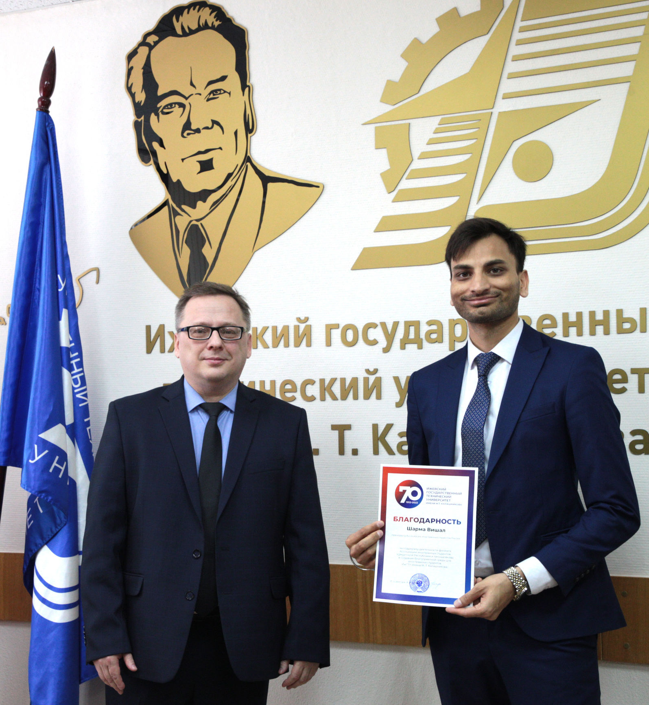

 ИжГТУ имени М.Т. Калашникова развивает сотрудничество с 40 зарубежными учебными заведениями и научно-исследовательскими организациями в странах Европы, Азии и Африки. В университете обучаются 350 иностранных студентов из 30 страны мира – Азербайджана, Алжира, Анголы, Армении, Беларуси, Гаити, Гамбии, Ганы, Гвинеи, Германии, Египта, Зимбабве, Ирака, Йемена, Казахстана, Камеруна, Конго, Либерии, Малайзии, Марокко, Нигерии, Сенегала, Сирии, США, Таджикистана, Туниса, Туркменистана, Узбекистана, Украины и ЮАР.
В 2022 году ИжГТУ имени М.Т. Калашникова заключил в режиме онлайн соглашения о сотрудничестве еще с двумя китайскими организациями: Цзинаньской образовательной корпорацией «Чжишан» и Цзилиньским химико-технологическим институтом, которые направлены на привлечение студентов этих учреждений в ИжГТУ для получения степени бакалавра. Кроме того, ИжГТУ и ЦХТИ разрабатывают совместные программы бакалавриата.